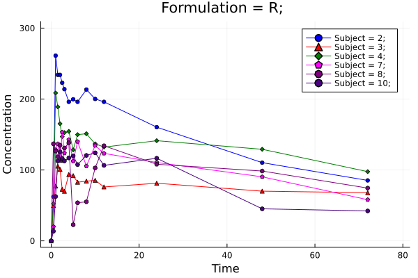
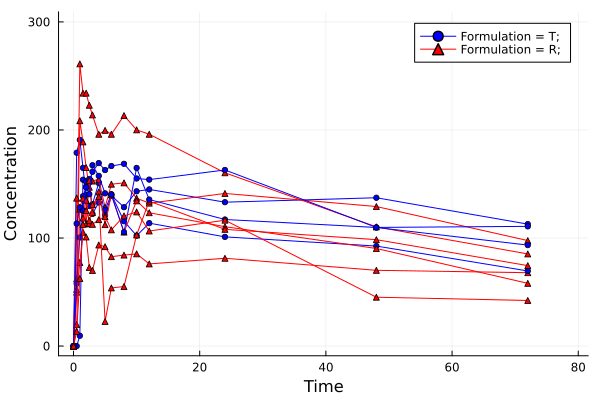
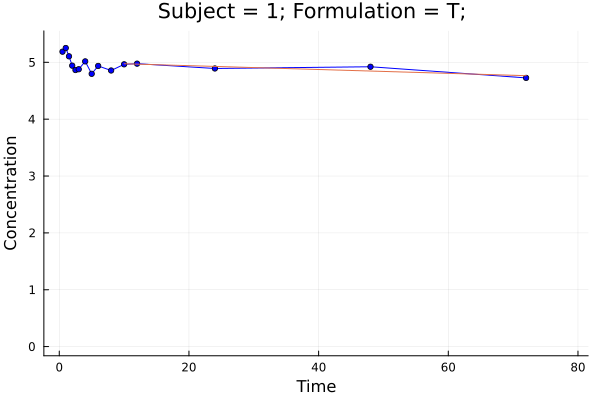
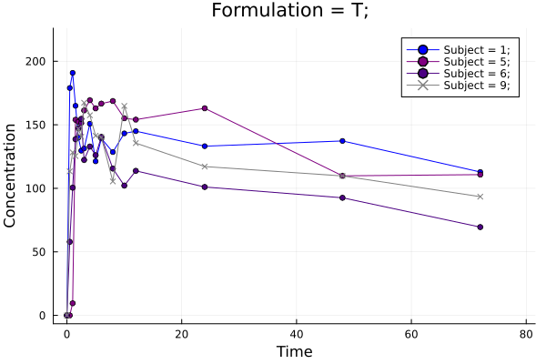
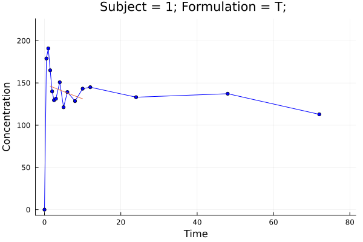
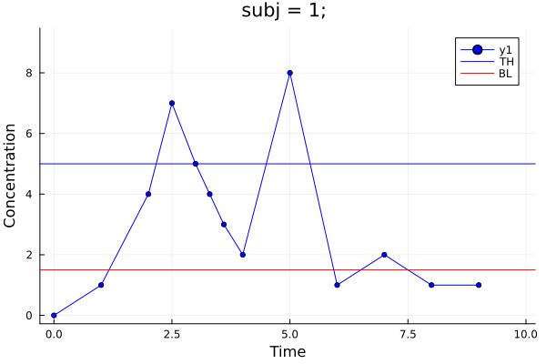

Examples
Import
Use pkimport to import PK data from table to subject set.
using MetidaNCA, CSV, DataFrames;
pkdata2 = CSV.File(joinpath(dirname(pathof(MetidaNCA)), "..", "test", "csv", "pkdata2.csv")) |> DataFrame
ds = pkimport(pkdata2, :Time, :Concentration, [:Subject, :Formulation]; dosetime = DoseTime(dose = 100, time = 0))
sort!(ds, :Subject)DataSet: Pharmacokinetics subject
Length: 10
Subject 1: Subject => 1, Formulation => T,
Subject 2: Subject => 2, Formulation => R,
Subject 3: Subject => 3, Formulation => R,
Subject 4: Subject => 4, Formulation => R,
Subject 5: Subject => 5, Formulation => T,
Subject 6: Subject => 6, Formulation => T,
Subject 7: Subject => 7, Formulation => R,
Subject 8: Subject => 8, Formulation => R,
Subject 9: Subject => 9, Formulation => T,
Subject 10: Subject => 10, Formulation => R,
NCA
Perform NCA analysis with nca!. Access to result set is similar to DataFrame or any table. Find parameter list here.
dsnca = nca!(ds, adm = :ev, calcm = :lint)
dsnca[:, :AUClast]10-element Vector{Float64}:
9585.42175
10112.175500000001
5396.549749999999
9317.83575
9561.26
6966.598000000001
7029.5735
7110.674499999999
8315.080249999999
5620.8945Partial AUC
dsnca = nca!(ds, adm = :ev, calcm = :lint, partials = [(1, 7)])
dsnca[:, :AUC_1_7]10-element Vector{Float64}:
841.7427500000001
1265.2779999999998
521.33225
924.9775
934.97
800.5465
782.66975
555.19825
864.5880000000001
678.70375Print output
dsnca = nca!(ds[1], adm = :ev, calcm = :lint, verbose = 2); PK/PD subject NCA result
------------- -------------
Keys Values
Symbol Float64
------------- -------------
Rsqn 3.0
Vzlast 3.08222
Tmax 1.0
ARsq 0.714769
AUClast 9585.42
MRTinf 293.162
AUCinf_pred 44242.6
LZ -0.00338474
LZint 5.00849
Obsnum 16.0
Clast 112.846
Dose 100.0
Tlag 0.0
Cdose 0.0
Vssinf 0.682964
⋮ ⋮
------------- -------------
16 rows omitted
Plotting
using Plots
p = pkplot(ds; typesort = :Subject, pagesort = nothing, filter = Dict(:Formulation => "R"))
png(p, "plot1.png")
p = pkplot(ds; typesort = :Formulation, pagesort = nothing, legend = true)
png(p, "plot2.png")
p = pkplot(ds; elim = true, ls = true)
png(p[1], "plot3.png")
p = pkplot(ds; typesort = :Subject, pagesort = :Formulation)
png(p[1], "plot4.png")"plot4.png"Plot 1

Plot 2

Plot 3

Plot 4

Set dose time
You can set dose time with setdosetime! for whole subject set or for selected subjects.
dt = DoseTime(dose = 200, time = 0)
setdosetime!(ds, dt, Dict(:Formulation => "R"))
dsnca = nca!(ds)
dsnca[:, :Dose]10-element Vector{Float64}:
100.0
200.0
200.0
200.0
100.0
100.0
200.0
200.0
100.0
200.0Set range for elimination
By default no exclusion or range specified. With setkelrange! elimination range and exclusion can be specified for whole subject set or for any selected subjects.
kr = ElimRange(kelstart = 4, kelend = 12, kelexcl = Int[5,6])
setkelrange!(ds, kr, [1,2,3])
dsnca = nca!(ds)
p = pkplot(ds[1]; elim = true)
png(p, "plot5.png")
getkeldata(ds[1])Elimination table:
------------ ---------- ------------ --------- ---------- ------------- ---
Strat time End time a b r² Adjusted r² N
------------ ---------- ------------ --------- ---------- ------------- ---
1.5 10.0 -0.0127605 5.00469 0.128943 -0.045268 7
------------ ---------- ------------ --------- ---------- ------------- ---
Plot 5

Without import
You can use nca for NCA analysis directly from tabular data.
dsnca = nca(pkdata2, :Time, :Concentration, [:Subject, :Formulation]; dosetime = DoseTime(dose = 100, time = 0))
sort!(dsnca, :Subject)
dsnca[:, :AUClast]10-element Vector{Float64}:
9585.42175
10112.175500000001
5396.549749999999
9317.83575
9561.26
6966.598000000001
7029.5735
7110.674499999999
8315.080249999999
5620.8945PD subject
Use pdimport to import PD data from table to subject set.
Import & NCA
pddata = CSV.File(joinpath(dirname(pathof(MetidaNCA)), "..", "test", "csv", "pddata.csv")) |> DataFrame
pd = MetidaNCA.pdimport(pddata, :time, :obs, :subj; bl = 1.5, th = 5.0)
MetidaNCA.nca!(pd[1]) PK/PD subject NCA result
--------- ---------
Keys Values
Symbol Float64
--------- ---------
Tmax 5.0
TBBL 3.2381
TIMEBTW 4.0
AUCBTW 11.7333
AUCBBL 1.80952
AUCNETT -19.35
Obsnum 13.0
AUCABL 13.9595
TATH 1.7619
AUCBTH 21.5762
TABL 5.7619
TBTH 7.2381
Rmax 8.0
AUCATH 2.22619
AUCNETB 12.15
--------- ---------
PD subject plotting
p = MetidaNCA.pkplot(pd[1], drawth = true, drawbl = true)
png(p, "plot6.png")"plot6.png"